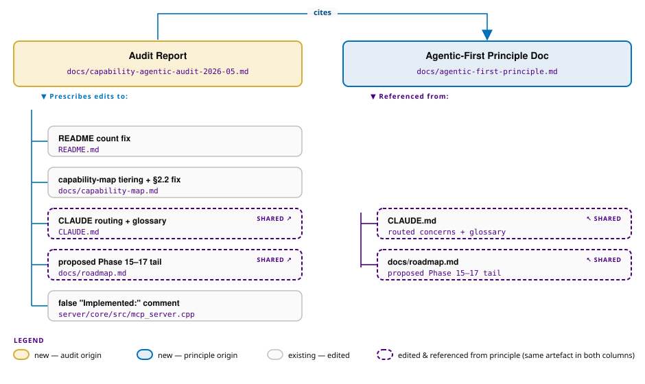

Capability & Agentic-Readiness Audit — Refined Plan
Capability & Agentic-Readiness Audit — Refined Plan
Date: 2026-05-01 Scope: Refine the supplied draft into an actionable audit deliverable, grounded in verified code/doc state. The user's framing is agentic-first: every operation a human can perform via the dashboard must be performable by an LLM-driven worker through a documented, discoverable, machine-readable surface.
Context
The supplied draft was written from memory and contains several factually wrong claims that, if used to drive doc/roadmap edits, would propagate noise. Verified during plan exploration:
| Draft claim | Actual state (verified) |
|---|---|
| capability-map says 225 / 166 / 74% | capability-map.md:35 says 208 / 165 / 79% |
| README says 184 / 150 / 82% | README.md:239 says 184 / 150 / 82% ← stale, but draft's number is right |
| "Phase 15 TAR + Scope Walking" | TAR is roadmap Issue 7.19 — Done; no Phase 15 exists |
| "Phase 16 Guardian (2 of 15 PRs)" | No numbered phase; Guardian is tracked separately in CLAUDE.md PR ladder |
| "Phase 17" hole | Roadmap stops at Phase 14; Phase 17 would be net-new |
docs/scope-walking-design.md, docs/tar-dashboard.md, docs/tar-implementer.md |
None of these files exist |
| "MCP Phase 2 not on roadmap" | Issue 13.5 already plans set_tag, delete_tag, approve_request, reject_request, quarantine_device + SSE for execution progress |
| "capability-map §2.2: scope/filter targeting NOT implemented" vs "asset-tagging-guide says it works" | Code wins — agent_registry.cpp:838-847 resolves tag:X, props.X, ostype, hostname, arch, agent_version. capability-map §2.2 is wrong; asset-tagging-guide is right |
| "set_tag, delete_tag implemented as MCP write tools" | mcp_server.cpp has them in kToolSecurity/kWriteTools and a misleading "Implemented:" comment, but no dispatch handler — only execute_instruction is wired (line 1313). They fall through to "Unknown tool" |
| "230 markdown files, 15 unrouted" | docs/ tree contains 59 files; the user-manual subset is correctly out of CLAUDE.md scope (it's user-facing). Real unrouted set is ~12 files |
| MCP token / OpenAPI / discovery surfaces | OpenAPI 3.0 spec exists at /api/v1/openapi.json (rest_api_v1.cpp:487); MCP discovery via tools/list works; no introspection for routes / plugins / scope-kinds / RBAC catalog |
/events SSE |
Exists (server.cpp:2200) but emits HTMX-friendly events to drive sse-swap HTML targets, and is unauthenticated — separate security concern worth flagging |
| 44 plugins / 65 YAML defs | 45 plugin dirs / 65 content/definitions/*.yaml |
Conclusion of exploration: the draft's structural insights are mostly right (agentic-first thesis, dashboard-only admin surfaces, error-envelope gaps, no introspection) but its facts and phase numbering are unreliable. The refined deliverable is one audit report plus a small set of doc reconciliations plus a list of proposed roadmap items (not implementations).
Deliverable shape
No code changes that affect runtime behaviour. The MCP comment fix is doc-only (a // comment that misrepresents implementation status).

File-by-file specification
1. docs/capability-agentic-audit-2026-05.md (NEW)
Single audit deliverable. Sections:
- Executive summary — verified numbers (208 / 165 / 79% per cap map, README stale at 184), three top gaps (Connectors 0%, Software Catalog 0%, Guardian Windows PRs 1–2 / 15), three top agentic gaps (no introspection surface, dashboard HTML-only, MCP write tools unwired).
- Capability tier honesty — restate per-tier numbers from capability-map.md: T1 33/33, T2 101/101 (with the §2.2 false gap removed → still 101/101), T3 31/50, New 0/24, Overall 165/208. Add a "scaffolded vs production-quality" overlay column for T2 (e.g.
2.4no command cancellation,2.7no inventory delta plugin). - Verified inconsistencies (the table from this plan's Context section, with file:line cites).
- Agentic-readiness scorecard — for each surface (REST, MCP, dashboard, SSE), what an authenticated machine worker can vs cannot do today. Cite the actual
kTools[]array,/api/v1/openapi.json, anddashboard_routes.cppfragments. - Agentic-first invariants (A1–A4) — point to
docs/agentic-first-principle.mdfor the rules; restate them inline in one paragraph. - Doc routing gaps — list the actual ~12 unrouted docs (not the draft's fabricated 15). Real list to verify by walking
docs/*.mdagainst CLAUDE.md "Routed concerns" + agent.mdreferences. - Recommendations P0–P3 — keep the draft's structure but renumbered against the real roadmap:
- P0 doc reconciliation (this PR's edits)
- P1 unblock agentic operation — accelerate Issue 13.5 (MCP Phase 2) since it already plans the missing write tools + SSE; add new issues for: (a) introspection endpoints (
/api/v1/discover/{routes,plugins,scope-kinds,permissions,instructions}), (b) dashboard JSON content negotiation on/fragments/*, (c) authenticated agent-facing SSE channel parallel to/events, (d) service-account principal type, (e) structured error envelope rev (retry_after_ms,remediation,correlation_id). - P2 capability completion — Phases 9, 10, 12 acceleration; Guardian PR cadence; Issue 7.19 already done; no fabricated Phase 15. - P3 roadmap holes — propose new Phase 15 (Agentic Surface Hardening), Phase 16 (Vulnerability/Compliance/Cert/Secrets/SBOM), explicit out-of-scope list (MDM, OS imaging, EDR-at-agent). - Verification checklist — see "Verification" section below.
The report must cite file:line for every code claim (the draft did not). When the report makes a claim like "scope tag-filter targeting works", it cites agent_registry.cpp:838-847.
2. docs/agentic-first-principle.md (NEW)
Short doc (~150 lines) stating the four invariants. These are the only new architectural rules introduced by this audit — keep them tight.
- A1 Dashboard parity — every new
/fragments/*route ships with either a parallel JSON variant (Accept negotiation) or a sibling REST endpoint. Existing fragments are not retroactively required to comply, but the audit lists which admin surfaces are dashboard-only today and earmarks them for P1. - A2 Discovery — every MCP tool, REST route, plugin action, scope kind, RBAC permission, and instruction definition is enumerable from a single discovery endpoint. (Today: only MCP
tools/listand/api/v1/openapi.jsonpartially satisfy this.) - A3 Observability — every long-running operation emits SSE events on a documented agent-accessible channel (separate from the HTMX-driven
/eventswhich exists today and remains as the dashboard channel). - A4 Error envelope — every failure response includes
code,message,correlation_id,retry_after_ms(nullable),remediation(URL or hint, nullable). OnkPermissionDeniedthe envelope names the missingsecurable_type:operation. OnkApprovalRequiredthe envelope returnsapproval_id+status_url.
Each invariant gets one paragraph + an "enforced by" pointer. consistency-auditor agent gets a one-line addition to its trigger list.
3. README.md:239 (EDIT)
Replace:
See [`docs/capability-map.md`](docs/capability-map.md) for the complete capability inventory (184 capabilities across 24 domains, 150 done — 82%).
With a pointer that doesn't restate numbers (numbers drift; the cap map is authoritative):
See [`docs/capability-map.md`](docs/capability-map.md) for the live capability inventory and progress.
4. docs/capability-map.md (EDIT)
Two changes only:
- §2.2 (line 131-135): remove the false "Gap: No scope/filter-based targeting" — the AttributeResolver in
agent_registry.cpp:827-855resolvestag:X,props.X,ostype,hostname,arch,agent_version. Cite the file:line in the surviving paragraph so future readers see the evidence. - Header note (after line 33): add a one-paragraph "scaffolded vs production-quality" caveat — T1/T2 percentages reflect feature presence, not enterprise hardening; the audit report is the source for known gaps. Recompute the "New (Ph 8-14)" line if §2.2's fix shifts the numerator (it doesn't, but check Foundation/Advanced denominators too).
5. CLAUDE.md (EDIT)
Two additions:
- Glossary block (insert after the architecture diagram, before "Agent Team & Governance"). Three definitions:
- Agent daemon — the C++ binary in
agents/core/ - Governance agent — the
.claude/agents/*.mdreview actors - Agentic worker — an external LLM-driven client of MCP / REST / dashboard
- Routed concerns table — append rows for the four most consequential currently-unrouted docs:
docs/architecture.md→ loaded byarchitecton cross-cutting design changesdocs/asset-tagging-guide.md→ loaded bydsl-engineeron scope/tag-DSL changesdocs/agentic-first-principle.md→ loaded byconsistency-auditoron every PR (new invariant gate)docs/tachyon-parity-plan.md→ loaded byarchitecton capability-map / roadmap changes
Do not add the user-manual docs to routing — they're user-facing and load via docs-writer already.
6. docs/roadmap.md (EDIT — append-only)
After "Phase 14: Scale & Enterprise Readiness" and before "Open Decisions" (line 1483), add a ## Proposed Phase 15+: Agentic Surface & Compliance Tracks section with:
- Phase 15 Agentic Surface Hardening — items extracted from the audit's P1 list:
- 15.1 Introspection endpoints (
/api/v1/discover/*) - 15.2 Dashboard JSON content negotiation
- 15.3 Agent-facing authenticated SSE
- 15.4 Service-account principal type
- 15.5 Structured error envelope rev
- Phase 16 Compliance & Lifecycle — capabilities currently absent:
- 16.1 Vulnerability lifecycle (CVE → CVSS → remediation owner → SLA)
- 16.2 CIS / NIST / SOC 2 evidence-pack templates
- 16.3 Certificate lifecycle (auto-renewal, expiry alerts)
- 16.4 Secrets-vault integration (HashiCorp / Azure KV / AWS SM)
- 16.5 SBOM ingest & component-level vuln linkage
- 16.6 Hardware attestation (TPM / Secure Boot / UEFI)
- Out of scope — short list with rationale: MDM (mobile), OS imaging / PXE, EDR-class telemetry at the agent (integrate via Phase 9 connectors instead).
Mark every item Status: Proposed so they aren't conflated with planned work.
7. server/core/src/mcp_server.cpp:227 (EDIT)
Fix the misleading comment. Currently:
// Implemented: set_tag, delete_tag, execute_instruction
// Planned: approve_request, reject_request, quarantine_device
// Implemented dispatch: execute_instruction (line 1313)
// Security-mapped but no dispatch yet (Issue 13.5): set_tag, delete_tag,
// approve_request, reject_request, quarantine_device
.cpp file in this PR. It makes the static map's reality match the runtime dispatch chain.
Order of operations
- Write
docs/agentic-first-principle.mdfirst (it's referenced by the audit and the routing table). - Write
docs/capability-agentic-audit-2026-05.mdsecond (cites the principle doc). - Apply the four edit-files in any order: README, capability-map, CLAUDE.md, roadmap, mcp_server.cpp comment.
- Verify per the checklist below, then commit + push to
claude/refine-local-plan-0io2A.
Critical files / functions to reuse (do not duplicate)
kTools[]andkToolSecurity(server/core/src/mcp_server.cpp:120-274) — cite, don't reimplement.AttributeResolver(server/core/src/scope_engine.hpp:60) and its agent_registry instantiation (agent_registry.cpp:827-855) — the canonical proof thattag:Xworks.openapi_spec()(server/core/src/rest_api_v1.cpp:165) — already exposes the REST surface; future P1.3 introspection endpoints should source from this rather than re-walking handlers.SseEvent/event_bus_(server/core/src/server.cpp:2200-2228) — agent-facing SSE in P1 should reuse this bus rather than introducing a parallel one.consistency-auditoragent (.claude/agents/consistency-auditor.md) — the audit's A1–A4 invariants extend its existing remit; do not create a new agent.
Verification
End-to-end checks before committing:
grep -E "184|82%" README.mdreturns 0 matches outside the version-history section.grep -E "No scope/filter" docs/capability-map.mdreturns 0 matches.grep -nE "agent daemon|governance agent|agentic worker" CLAUDE.mdreturns ≥3 hits in the new glossary block.grep -E "Phase 15|Phase 16" docs/roadmap.mdreturns the new "Proposed" entries.grep -nE "Implemented:" server/core/src/mcp_server.cppreturns the corrected comment with no claim ofset_tag/delete_tagdispatch.- Every claim in the audit report that says "code does X" is followed by
(file.cpp:LINE)— spot-check 5 random claims to confirm. meson compile -C build-linuxsucceeds (the only code edit is a comment; this should be trivially true, but verify because comment edits can still trip ccache invalidation).- No new test failures:
meson test -C build-linux --suite server --print-errorlogspasses (also expected to be a no-op given the change set, but run it to be sure). docs/agentic-first-principle.mdis reachable fromCLAUDE.mdrouted-concerns table.- The audit report's "Verified inconsistencies" table file:line citations all resolve (open each one to confirm).
End-to-end semantic check: a fresh reader who reads only the new audit report should be able to (a) identify the three highest-impact agentic gaps, (b) find the existing Issue 13.5 covering MCP Phase 2, (c) understand which capability-map gap claims are doc bugs vs real gaps, and (d) recognise the four agentic-first invariants without needing to read the principle doc.
Out of scope for this PR
- Implementing any of the P1 items (introspection, dashboard JSON, agent SSE, service accounts, error envelope) — those become roadmap issues 15.1–15.5.
- Implementing Phase 13.5 MCP write tools — already a roadmap issue.
- Filing the actual GitHub issues for proposed Phases 15–16 — list them in the audit; let the user decide when to file.
- Securing the unauthenticated
/eventsendpoint — note in the audit as a security follow-up, do not fix here. - Reconciling the README's broader content beyond the capability count line.
- Editing user-manual docs.